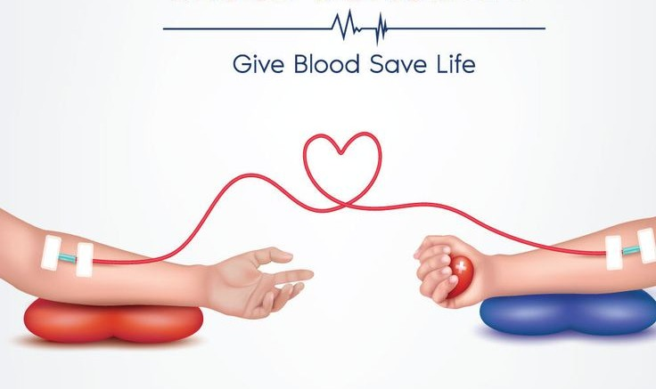

Bridging Lives
Precisely When It Matters.
Jeevandhara eliminates the critical gap in emergency healthcare with AI-driven donor matching and real-time visibility across hospitals and blood banks.

Why Jeevandhara Matters
Fragmented Information
No centralised platform provides real-time stock levels, forcing hospitals to make inefficient, manual coordination calls during emergencies.
Emergency Delays
Finding compatible donors during life-or-death situations currently involves extreme manual effort, costing irreplaceable critical minutes.
Low Donor Motivation
Absence of engagement tools and incentivisation results in low repeat donation rates among voluntary donors across urban and rural sectors.
A Unified Vision for
Blood Management
Unified Web Portal
Fully responsive portal mapped to healthcare partners, accessible across all devices and network conditions.
Real-Time Visibility
Instant transparency into blood stock levels across partnered blood banks, updated continuously through a decentralized sync.
SOS Emergency Broadcast
Built-in SOS feature that sends instant, localised alerts to the nearest matching donors within seconds during crisis moments.

Intelligence Meeting
Human Compassion
Emergency Blood Match AI
Intelligently matches urgent patient needs with the nearest compatible donor in real time, dramatically reducing procurement time.
Smart Appointments
Enables advance slot scheduling for donation or blood pickup, eliminating waiting lines and improving operational efficiency.
Bilingual Accessibility
Native dual-language support (English & Marathi) ensures platform accessibility for both urban populations and rural communities.

Gamified Giving:
Rewarding Every Hero.
Beyond simple matching, we transform a one-time charitable act into a tracked, rewarding, and repeatable habit. Our gamification approach ensures donors feel valued and inspired to return.
- Transparent Donation History Tracking
- Hero Badges & Milestone Rewards
- Personalised Health Overview Reports
- Pre-Donation Diet & Recovery Guidance
Diamond Hero
50+ Donations
Silver Lifesaver
10+ Donations
First Blood
Starter Badge
Health Guardian
Premium Profile